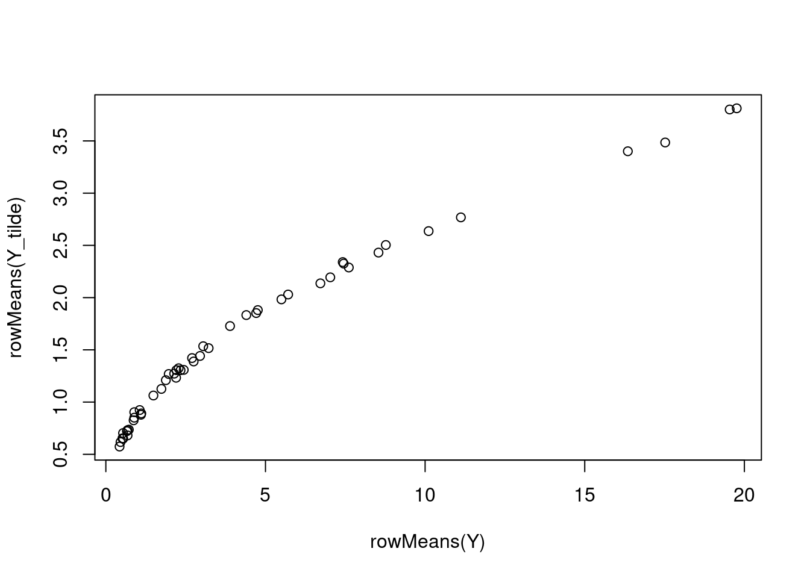
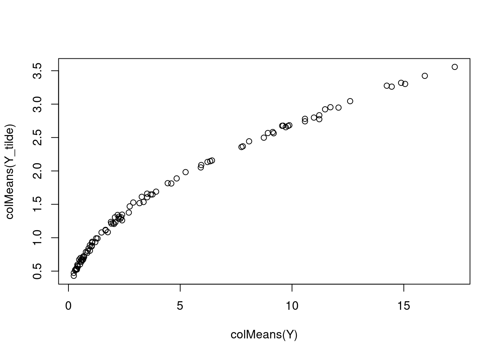
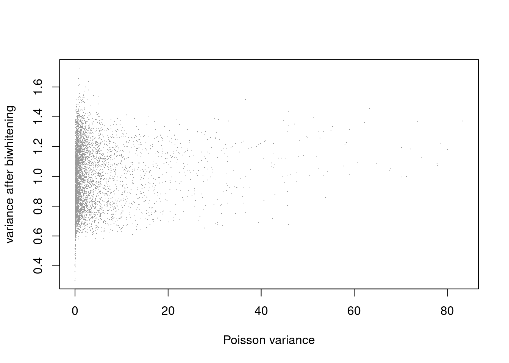
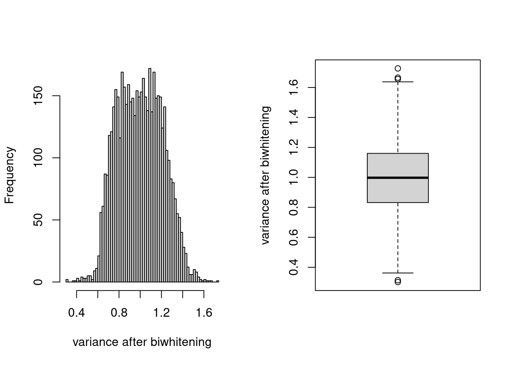
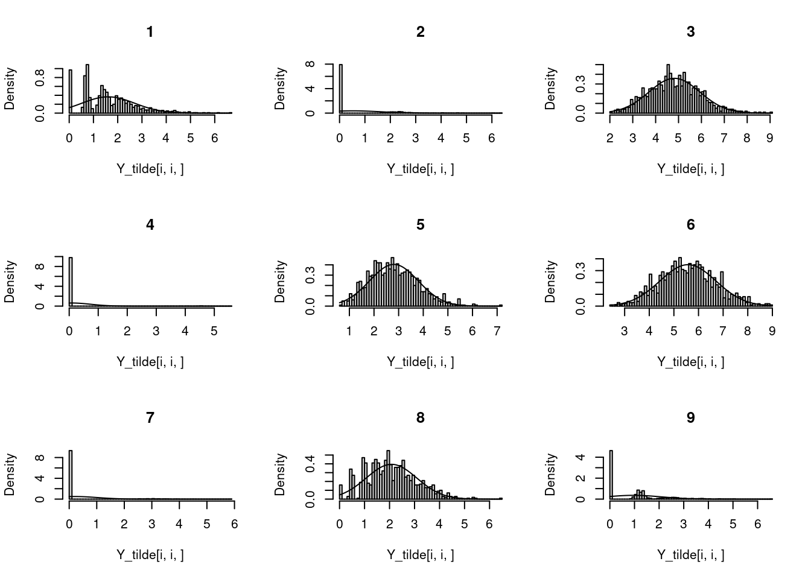
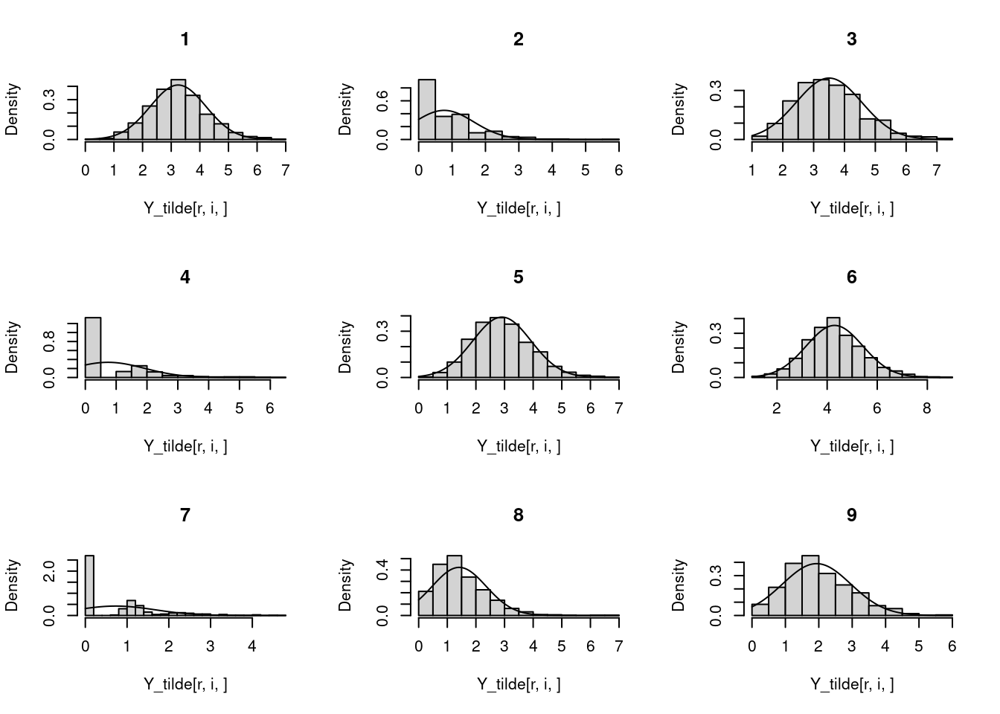
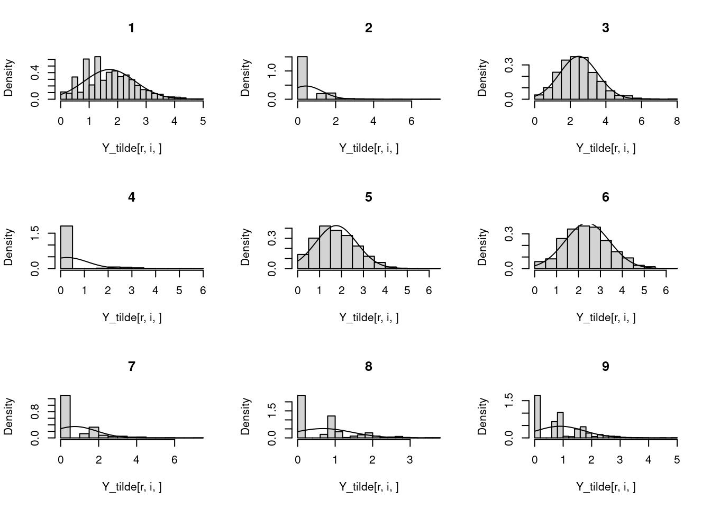
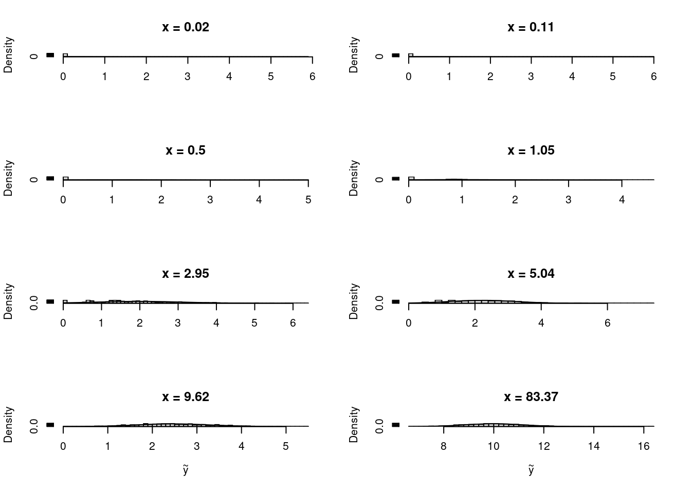

Last updated: 2023-03-28
Checks: 7 0
Knit directory: SMF/
This reproducible R Markdown analysis was created with workflowr (version 1.6.2). The Checks tab describes the reproducibility checks that were applied when the results were created. The Past versions tab lists the development history.
Great! Since the R Markdown file has been committed to the Git repository, you know the exact version of the code that produced these results.
Great job! The global environment was empty. Objects defined in the global environment can affect the analysis in your R Markdown file in unknown ways. For reproduciblity it’s best to always run the code in an empty environment.
The command set.seed(20190719) was run prior to running
the code in the R Markdown file. Setting a seed ensures that any results
that rely on randomness, e.g. subsampling or permutations, are
reproducible.
Great job! Recording the operating system, R version, and package versions is critical for reproducibility.
Nice! There were no cached chunks for this analysis, so you can be confident that you successfully produced the results during this run.
Great job! Using relative paths to the files within your workflowr project makes it easier to run your code on other machines.
Great! You are using Git for version control. Tracking code development and connecting the code version to the results is critical for reproducibility.
The results in this page were generated with repository version 1768c87. See the Past versions tab to see a history of the changes made to the R Markdown and HTML files.
Note that you need to be careful to ensure that all relevant files for
the analysis have been committed to Git prior to generating the results
(you can use wflow_publish or
wflow_git_commit). workflowr only checks the R Markdown
file, but you know if there are other scripts or data files that it
depends on. Below is the status of the Git repository when the results
were generated:
Ignored files:
Ignored: .Rhistory
Ignored: .Rproj.user/
Untracked files:
Untracked: data/count_files.RData
Untracked: data/lowgene/
Untracked: data/stmGTEx/
Untracked: output/luis/
Untracked: output/plots/
Unstaged changes:
Modified: analysis/biwhitening_PMF.Rmd
Note that any generated files, e.g. HTML, png, CSS, etc., are not included in this status report because it is ok for generated content to have uncommitted changes.
These are the previous versions of the repository in which changes were
made to the R Markdown (analysis/biwhitening.Rmd) and HTML
(docs/biwhitening.html) files. If you’ve configured a
remote Git repository (see ?wflow_git_remote), click on the
hyperlinks in the table below to view the files as they were in that
past version.
| File | Version | Author | Date | Message |
|---|---|---|---|---|
| Rmd | 1768c87 | DongyueXie | 2023-03-28 | wflow_publish("analysis/biwhitening.Rmd") |
| html | 35d9064 | DongyueXie | 2022-04-18 | Build site. |
| Rmd | 6624dca | DongyueXie | 2022-04-18 | wflow_publish("analysis/biwhitening.Rmd") |
Let \(Y = X + E\), the biwhitening method proposed by Landa et al 2021 transforms \(Y\) to
\(\tilde Y = D(u) Y D(v) = \tilde X + \tilde E\) such that
\[\mathbb{E}(\tilde E\tilde E^T/n) = I_m,\mathbb{E}(\tilde E^T \tilde E/m) = I_n.\]
That is, the average variance in each row and column of \(\tilde E\) is 1. When \(Y\) is Poisson distributed, this says \[\sum_i^m u_i^2 X_{ij} v_j^2 = m, \sum_j^n u_i^2X_{ij}v_j^2 = n.\]
To find \(u\) and \(v\), the algorithm 2 in the paper presents the Sinkhorn-Knopp algorithm.
Input: Nonnegative matrix \(A\), target row sums \(\boldsymbol r\), and target column sums \(\boldsymbol c\), tolerance \(\delta>0\).
Code below:
#'@param A nonnegative matrix
#'@param rs target row sums, a vector of length m
#'@param cs target col sums, a vector of length n
#'@param tol tol to stop the iterations
Sinkhorn_Knopp = function(A,rs=NULL,cs=NULL,tol=1e-5,maxiter=100){
m = nrow(A)
n = ncol(A)
if(is.null(rs)){
rs = rep(n,m)
}
if(is.null(cs)){
cs = rep(m,n)
}
x = rep(1,m)
y = rep(1,n)
niter = 0
while(niter<=maxiter) {
Ax = c(crossprod(A,x))
if(max(abs(y*Ax))<= tol){
break
}
y = cs/Ax
Ay = c(A%*%y)
x = rs/Ay
#if(max(abs(x*Ay-rs))<=tol & max(abs(y*c(crossprod(A,x))-cs))<= tol){
# break
#}
niter = niter + 1
}
return(list(x=x,y=y))
}# example in Appendix C.2
set.seed(12345)
m = 50
n = 100
X = matrix(runif(m*n,1,2),nrow=m,ncol=n)
X = t(t(X*exp(runif(m,-2,2)))*exp(runif(n,-2,2)))
Y = matrix(rpois(m*n,X),nrow=m,ncol=n)
out = Sinkhorn_Knopp(Y,tol=1e-11)
d = diag(c((out$x)))%*%Y%*%diag(c((out$y)))
rowSums(d) [1] 100 100 100 100 100 100 100 100 100 100 100 100 100 100 100 100 100 100 100
[20] 100 100 100 100 100 100 100 100 100 100 100 100 100 100 100 100 100 100 100
[39] 100 100 100 100 100 100 100 100 100 100 100 100colSums(d) [1] 50 50 50 50 50 50 50 50 50 50 50 50 50 50 50 50 50 50 50 50 50 50 50 50 50
[26] 50 50 50 50 50 50 50 50 50 50 50 50 50 50 50 50 50 50 50 50 50 50 50 50 50
[51] 50 50 50 50 50 50 50 50 50 50 50 50 50 50 50 50 50 50 50 50 50 50 50 50 50
[76] 50 50 50 50 50 50 50 50 50 50 50 50 50 50 50 50 50 50 50 50 50 50 50 50 50The u, v in the Poisson case would be \(u = sqrt(x), v = sqrt(y)\). The transformed matrix is then
Y_tilde = diag(c(sqrt(out$x)))%*%Y%*%diag(c(sqrt(out$y)))
plot(rowMeans(Y),rowMeans(Y_tilde))
plot(colMeans(Y),colMeans(Y_tilde))
Maybe we can simulate data 100 times, and calculate the variance of each entry, plot the distribution and see how the transforamtion works(on variance and distribution).
set.seed(12345)
n_rep = 1000
Y_tilde = array(dim=c(m,n,n_rep))
Y = array(dim=c(m,n,n_rep))
for(i in 1:n_rep){
Y[,,i] = matrix(rpois(m*n,X),nrow=m,ncol=n)
out = Sinkhorn_Knopp(Y[,,i],tol=1e-11)
Y_tilde[,,i] = diag(c(sqrt(out$x)))%*%Y[,,i]%*%diag(c(sqrt(out$y)))
}Look at the variance before and after transformation
plot(X,apply(Y_tilde,c(1,2),var),xlab = 'Poisson variance', ylab = 'variance after biwhitening',pch='.',cex=1,col='grey60')
| Version | Author | Date |
|---|---|---|
| 35d9064 | DongyueXie | 2022-04-18 |
par(mfrow=c(1,2))
hist(apply(Y_tilde,c(1,2),var),breaks = 100,main='',xlab='variance after biwhitening')
boxplot(c(apply(Y_tilde,c(1,2),var)),main='',ylab='variance after biwhitening')
| Version | Author | Date |
|---|---|---|
| 35d9064 | DongyueXie | 2022-04-18 |
Non of true poisson lambda is 0. Variance after transformation seems to have mean around 1.
Look at some distribution.
par(mfrow=c(3,3))
for(i in 1:9){
print(X[i,i])
hist(Y_tilde[i,i,],breaks = 50,freq = FALSE,main=paste(i))
x = seq(range(Y_tilde[i,i,])[1],range(Y_tilde[i,i,])[2],length.out = 100)
curve(dnorm(x,mean=mean(Y_tilde[i,i,]),sd=sd(Y_tilde[i,i,])), add=TRUE)
}[1] 2.328184[1] 0.2150417[1] 20.36863[1] 0.0281371[1] 8.214323[1] 26.26458[1] 0.07391752[1] 4.298053[1] 0.7949581
for(i in 1:9){
r = 30
print(X[r,i])
hist(Y_tilde[r,i,],breaks = 20,freq = FALSE,main=paste(i))
x = seq(range(Y_tilde[r,i,])[1],range(Y_tilde[r,i,])[2],length.out = 100)
curve(dnorm(x,mean=mean(Y_tilde[r,i,]),sd=sd(Y_tilde[r,i,])), add=TRUE)
}[1] 11.09687[1] 0.7245544[1] 11.38213[1] 0.383629[1] 8.670353[1] 14.99803[1] 0.6120885[1] 2.394462[1] 3.502384
for(i in 1:9){
r = 40
print(X[r,i])
hist(Y_tilde[r,i,],breaks = 20,freq = FALSE,main=paste(i))
x = seq(range(Y_tilde[r,i,])[1],range(Y_tilde[r,i,])[2],length.out = 100)
curve(dnorm(x,mean=mean(Y_tilde[r,i,]),sd=sd(Y_tilde[r,i,])), add=TRUE)
}[1] 3.905036[1] 0.3078226[1] 5.342475[1] 0.1117732[1] 3.450644[1] 5.646072[1] 0.4314669[1] 0.7812951[1] 1.102982
idx = rbind(c(20,55),c(7,10),c(8,4),c(44,100),c(2,6),c(10,6),c(8,5),c(39,71))
par(mfrow=c(4,2))
for(i in 1:8){
ii = idx[i,]
if(i%in%c(7,8)){
hist(Y_tilde[ii[1],ii[2],],breaks = 50,freq = FALSE,main=paste('x =',round(X[ii[1],ii[2]],2)),xlab=expression(tilde(y)))
}else{
hist(Y_tilde[ii[1],ii[2],],breaks = 50,freq = FALSE,main=paste('x =',round(X[ii[1],ii[2]],2)),xlab='')
}
x = seq(range(Y_tilde[ii[1],ii[2],])[1],range(Y_tilde[ii[1],ii[2],])[2],length.out = 100)
curve(dnorm(x,mean=mean(Y_tilde[ii[1],ii[2],]),sd=sd(Y_tilde[ii[1],ii[2],])), add=TRUE)
}
sessionInfo()R version 4.1.0 (2021-05-18)
Platform: x86_64-pc-linux-gnu (64-bit)
Running under: CentOS Linux 7 (Core)
Matrix products: default
BLAS: /software/R-4.1.0-no-openblas-el7-x86_64/lib64/R/lib/libRblas.so
LAPACK: /software/R-4.1.0-no-openblas-el7-x86_64/lib64/R/lib/libRlapack.so
locale:
[1] LC_CTYPE=en_US.UTF-8 LC_NUMERIC=C LC_TIME=C
[4] LC_COLLATE=C LC_MONETARY=C LC_MESSAGES=C
[7] LC_PAPER=C LC_NAME=C LC_ADDRESS=C
[10] LC_TELEPHONE=C LC_MEASUREMENT=C LC_IDENTIFICATION=C
attached base packages:
[1] stats graphics grDevices utils datasets methods base
other attached packages:
[1] workflowr_1.6.2
loaded via a namespace (and not attached):
[1] Rcpp_1.0.10 rstudioapi_0.13 whisker_0.4 knitr_1.33
[5] magrittr_2.0.3 R6_2.5.1 rlang_1.0.6 fastmap_1.1.0
[9] fansi_1.0.4 highr_0.9 stringr_1.5.0 tools_4.1.0
[13] xfun_0.24 utf8_1.2.3 cli_3.6.0 git2r_0.28.0
[17] jquerylib_0.1.4 htmltools_0.5.4 rprojroot_2.0.2 yaml_2.3.7
[21] digest_0.6.31 tibble_3.1.8 lifecycle_1.0.3 later_1.3.0
[25] sass_0.4.0 vctrs_0.5.2 promises_1.2.0.1 fs_1.5.0
[29] glue_1.6.2 evaluate_0.14 rmarkdown_2.9 stringi_1.6.2
[33] bslib_0.2.5.1 compiler_4.1.0 pillar_1.8.1 jsonlite_1.8.4
[37] httpuv_1.6.1 pkgconfig_2.0.3